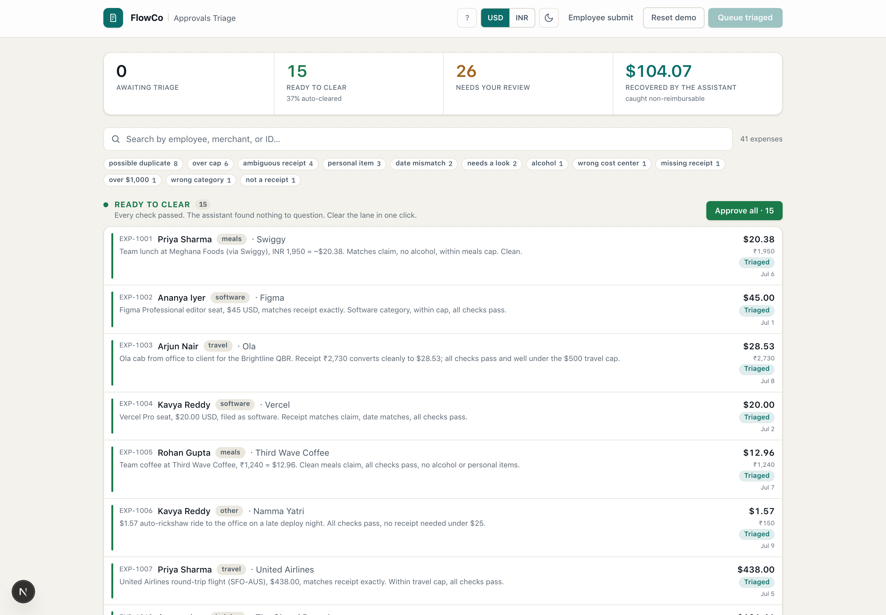
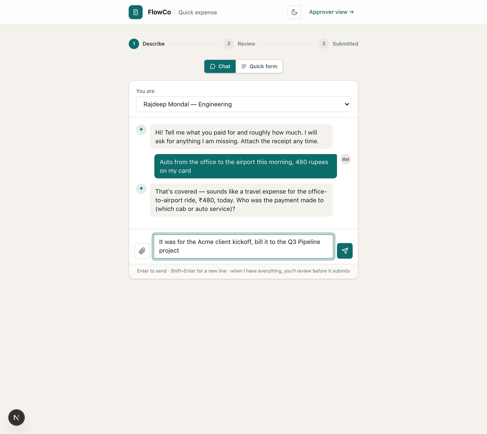
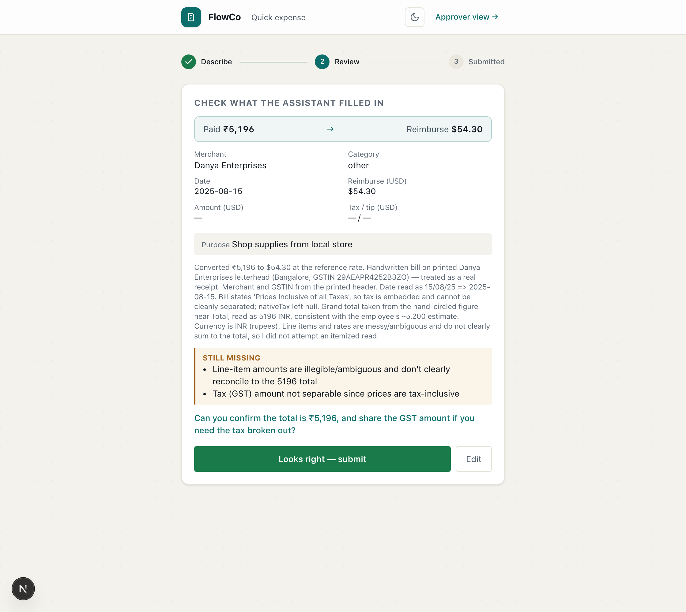
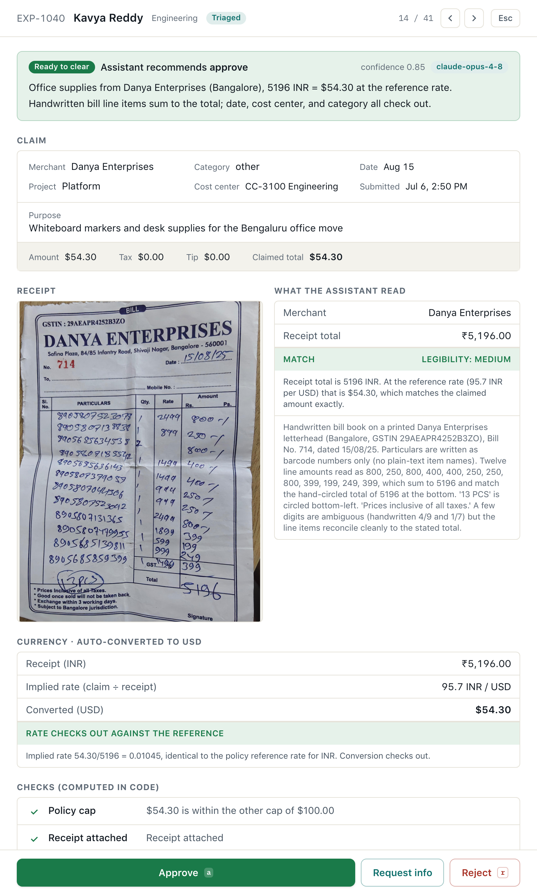
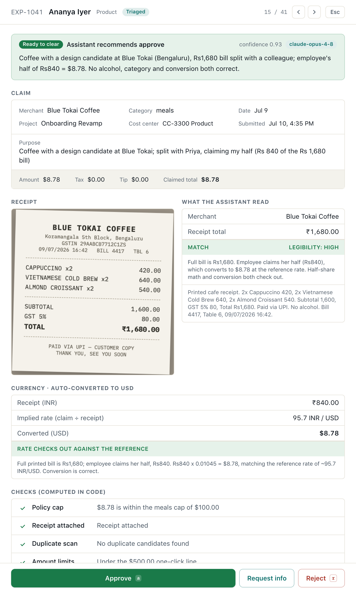

The approvals problem is not the approve click. It is the digging.
So I built an assistant that digs. It reads the receipt, runs the policy checks, converts the money, compares the doubles, and drafts the follow-up, then hands a person the decision with the proof laid out. This walkthrough shows how that works, screen by screen, and the one test where the model got it wrong until I moved the decision into code.
Fourteen sections. If you only read three, read 01, 02 and 12.
Everything in here is live. The numbers come from one real model run on the deployed app, made while I wrote this, and each claim points to a case you can open yourself at the link on the cover. Reset demo puts the queue back, so break whatever you like.
FlowCo · Approvals Triage · WalkthroughContents
01What was asked
The brief, and the three rules I built by
FlowCo employees file expenses through a seven-screen form. Approvers check each one by hand. They check the amount against a policy doc no system enforces. They eyeball the receipt photo. They email the employee when something is off. They search a spreadsheet for doubles. The costly part is everything that happens before the approve click.
The case the brief asked for, in its own words
"As a member of FlowCo's internal Approvals team, when the assistant can't resolve something, a policy exception, an ambiguous receipt, a possible duplicate, I want an AI-assisted way to triage and clear it fast, so I'm not manually digging through every flagged case."
You asked for two things. A working app that covers the happy path plus at least one case the helper cannot settle alone. And a five-minute recording. You also set three ground rules. I treated them as design rules, not tips:
Skip the memo and the slides. So I skipped them. This document shows the product itself, screen by screen, in the order I would demo it.
Depth beats breadth. So I built one thing deep: the triage story. The employee side exists because it proves the same engine runs both ways, not because I tried to build everything.
Do not hide the rough bits. So section 12 is the longest story here: the exact test where the model failed, what I changed because of it, and the raw transcripts, which sit in the repo word for word.
One choice came before any code: the assistant never approves or rejects. It digs, and a person decides. Everything below follows from that rule.
The queue holds 41 expenses because your brief lists the reasons an approver stops, and I wanted each of them live as a case you can open, plus the edge cases you only find by building. Section 11 maps them all.
FlowCo · Approvals Triage · Walkthrough01 / 14
02The result, in one run
One click across 41 expenses caught $104.07
The app opens by asking whether you are an Admin or an Employee, because the two sides of this workflow are different products. Pick Admin and you land in a queue of 41 expenses from an India-based team. Rupee receipts. Singapore dollar receipts. Phone photos. PDFs. One fully handwritten receipt. And one file that is not a receipt at all. I pressed the button once and wrote this page from that live run.
41
Expenses in
15
Cleared on their own
26
Sent to a person
$104.07
Caught, not payable
The queue after this run. Fifteen cases sit in Ready to clear behind one Approve-all button. Foreign amounts show both ways, so the Swiggy lunch reads ₹1,950 and $20.38 at once. The filter chips count why cases stopped: 8 possible doubles, 6 over cap, one file that is not a receipt. There is no chip for foreign currency, because a clean conversion is not a reason to stop a case.
That $104.07 is money FlowCo would have paid and should not have. A drink and its tax ($11.92). A movie on a hotel receipt ($16.54). A tip stacked on a service charge ($10.30). A foreign over-claim ($61.12). A personal book ($3.69). And fifty cents of gray zone that matters far more than its size. Every one was found by claude-opus-4-8 reading the real receipt at run time. Nothing in this document is hard-coded or staged.
FlowCo · Approvals Triage · Walkthrough02 / 14
03The Admin side
Two lanes: decide in one click, or decide with proof
Press Run assistant triage and every case takes the same two steps. Checks run in code first. Then the model reads the real receipt. The queue settles into two lanes. The green lane holds cases where every check passed and the model found nothing to question. You clear them all in one click, with a full audit trail. The review lane is where the product earns its keep. Every case in it arrives with the digging already done.

The review lane. Each row is a one-line verdict: what the helper found, what it suggests, and the local amount next to the dollars. Rows shimmer while their model call runs, and land as they finish.
Open any row and you get the proof drawer. It reads top to bottom, in the order an approver thinks:
The advice first. One line, with the model's confidence and which engine made it. You read an answer, not a transcript.
A math ledger when money comes off. Claimed, minus the item, equals pay, with the exact number instead of a hint to go check.
The receipt next to what was read from it. Shop, total, how clear the paper was, and the lines it pulled. You can disagree with its reading at a glance.
Every code check with its result. Caps, limits, doubles, receipt present, cost center, money. Pass or fail, with the reason.
What the helper could not settle. Kept as a required field, because on a flagged case, named doubt is the most useful thing on the screen.
A drafted note to the employee. When something is missing, the ask is already written; the approver changes a word and sends it.
The console stays out of the way: search, filter chips per reason, and keys for the whole flow (j and k to move, Enter to open, a to approve, r to reject), with undo on every action. A USD and INR toggle flips every amount, and one-click Reset puts the seed back. Without an API key it runs in a labeled mock mode on checks alone, so the code path is testable with zero spend.
FlowCo · Approvals Triage · Walkthrough03 / 14
04The Employee side
The employee side: a sentence instead of seven screens
This half of the brief was optional. I built it because the engine was already there. The model that reads receipts for the approver can read an employee's sentence just as well, and the conversion code does not care which side calls it. Both paths end at the same review card, and nothing is submitted until the employee confirms it.
Quick form. One sentence, the way you would tell a coworker, plus an optional photo or PDF. The model fills every field and shows the draft back: "about ₹6,400" comes back as ₹6,400 paid, $66.88 to pay back, converted in code rather than by the model. A plain list names what is still missing, and the helper asks for the exact total instead of treating a rough one as exact.

Chat. The same intake as a conversation, on claude-sonnet-5. It asks one question per turn, keeps its replies short, and takes the receipt whenever you attach it. A phrase like "this morning" becomes a real date in code. When the chat has everything, it hands the transcript to the same engine the form uses, so every draft comes from one path.

It reads handwriting and admits what it cannot read
Drop in a real handwritten Bangalore receipt. The model takes the shop name and tax ID from the printed header. It trusts the hand-circled ₹5,196. It converts that to $54.30 in code. Then the honest part: it says the tax line is too faint to read, says the scrawled items do not quite add up, lists both as missing, and asks the employee to confirm. It does not invent a clean answer.
Submit drops the case into the approver's queue, where the same engine, checks, and drawer take over. It is one machine, entered from the other end.
FlowCo · Approvals Triage · Walkthrough04 / 14
05What one click really runs
Input to verdict, step by step
This is the whole path for one case, in order.
The claim loads. An expense is plain data: person, shop, category, date, amounts, cost center, a receipt link. The claim total is always in US dollars. Code enforces that. It is why a rupee receipt can never enter the queue posing as dollars.
Checks run in code. No model yet. Policy caps per category. The $500 one-click line and the $1,000 manager line. Double candidates by person, shop, and a three-day window. Receipt required above $25. Cost center against the team's GL map. Money: a known rate converts in code and is a note on the case, not a block. Everything computable stays in code.
The receipt loads. The file is read on the server and encoded. Photos go to the model as images. PDFs go as documents, so a PDF invoice is read as a real file, not a screenshot. A file that fails to load never crashes the run. Code marks the case unread and sends it to a person.
One model call does the judgment.claude-opus-4-8 gets the claim, every check result, the double candidates, and the receipt itself, with thinking on. Its job is everything code cannot do. Read the lines. Spot drinks and personal items. Match the receipt to the claim in the receipt's own money. Compare the doubles. Judge the category. Rate how clear the paper is. Draft the note to the employee.
The answer is locked to a schema. The reply must fit a strict shape: what was read, match or not, items to take off with amounts, the money math with the claim's own rate, a confidence score, a required list of what it could not settle, and advice limited to actions that exist. No free text posing as data, and no invented actions.
Code routes the case. Section 07 lists all ten rules. The short version: any failed check, any mismatch, any doubt, any item to take off, any money math that does not survive sends the case to a person. The model can make routing stricter. Never looser.
The verdict is saved and shown. The whole case, claim plus checks plus verdict plus audit trail, is stored as one record. The drawer shows it as proof. Approve, reject, ask for info, undo. Every action lands in the audit log with a time.
On speed, honestly: one Opus call with vision and thinking takes 10 to 30 seconds per case. The queue runs cases side by side and fills the lanes as they land, so the run feels alive, not frozen. Model routes get 120-second budgets and hourly caps on the public URL, so the demo cannot burn the key.
FlowCo · Approvals Triage · Walkthrough05 / 14
06The models, and why these
Two models and a mock engine, each for its own reason
Model choice here was really three separate choices.
claude-opus-4-8, the reader
Opus runs both jobs that look at documents: the approver-side triage and the employee-side draft. Reading the receipt is the load-bearing judgment in this product. A missed drink or a made-up total is not a small bug; it is money paid wrong. So the reading gets the strongest vision and reasoning there is. One engine for both sides also means one prompt style, one schema, one set of habits to test.
claude-sonnet-5, the talker
Chat turns are short, fast, and cheap: "who was the shop, roughly how much, when." That needs speed, not deep vision, and it costs a small fraction of a triage call. The chat never writes the draft itself. When it has everything, it signals ready and hands the whole transcript to the Opus path. One engine owns every draft, whichever door the employee used.
The mock engine, no model at all
Without an API key the app still runs. The code checks route the queue, and the screen says so plainly. That is not a demo trick; it is how you test the code, the store, and the UI with zero spend. It is also why the guardrail has no excuse to be untested.
How they connect
Sonnet gathers the facts, Opus reads and matches, the schema checks the shape, and code routes, converts, and stores. Every arrow in that chain crosses exactly one line: the model never holds the pen on money or routing.
Model names are settings rather than structure. Both swap with an env var (TRIAGE_MODEL, CHAT_MODEL), so changing engines is a config change, not a rewrite.
FlowCo · Approvals Triage · Walkthrough06 / 14
07The routing guardrail
Ten rules, all in code, all pointing one way
The green lane is earned, not assumed. A case clears only if it survives every rule below. The model can trip any rule and send a case to a person. It cannot do the reverse. There is no code path where the model's opinion beats a failed check. That one-way door is the most important line in the codebase.
// applyGuardrail, lib/triage.ts, in plain words but faithful
if (anyCheckFailedOrWarned) returnneeds_human; // code's verdict is finalif (model.verdict == "needs_human") returnneeds_human; // the model can tighten...if (model.confidence < 0.8) returnneeds_human; // ...doubt goes to peopleif (legibility == "low") returnneeds_human; // a guess is not a checkif (receiptMatch in {mismatch, uncertain, not_a_receipt}) returnneeds_human;
if (claimedTotal - extractedTotal > $0.01) returnneeds_human; // the fifty-cent rule, §12if (nonReimbursableFound) returnneeds_human; // deductions need a human yesif (impliedFxRate implausible) returnneeds_human; // the over-claim catchif (categoryLooksWrong || dateMismatch) returnneeds_human;
returnclear;
Two floors sit on top of routing, because routing alone is not enough. If the paper is too blurry, code also flips the advice to request info and drafts the "please send a clearer photo" note. So the approver's one keystroke is the safe one, even when the model felt sure. And the fifty-cent rule exists because the model reads the numbers but code owns the limit. A claim above what the receipt supports goes to a person, even when the model calls it a match.
One rule is missing on purpose. No rule sends foreign money to a person. A clean conversion at the set rate is a note on the case, not a block. A case stops for the money itself: a cap, a limit, or claim math that does not hold. Conversion is math, and math is code's job.
FlowCo · Approvals Triage · Walkthrough07 / 14
08Corner cases · money the model found
No data field says "drink"
These cases are why a model belongs in this product at all. No rules engine can catch them, because the proof exists only on the paper.
EXP-1013, the showpiece. A real ₹16,823 team dinner from Goa, shot at an angle. Claimed $175.80. The model reads the receipt line by line, finds the one drink, "Goan Mudslide (Absolut)", knows policy does not pay for alcohol, and adds the drink's own 22% tax. Then it lands the ledger: claimed $175.80, minus $11.92, pay $163.88. The crossed-out line is on screen. The approver checks an answer instead of digging for one.
EXP-1024, the hotel receipt. An ITC Gardenia receipt, ₹17,833, which converts to $186.36. Inside it hides a ₹1,583 in-room movie. The model takes the movie off. It also notices the tax line belongs to the room alone, so no tax follows the movie. Pay lands at $169.82. It even flags that the visible lines add up short of the printed total. That is the kind of note that makes an approver trust the rest.
The third one is smaller and meaner. EXP-1033 is a real Amazon invoice for a personal money book. ₹352.80, which converts to $3.69, charged to the company. The receipt is real; the purchase is personal. The model reads the title, says so, and sets the pay amount to zero until someone shows a work reason. A personal buy does not become payable by being small, and a $4 leak across a thousand employees is not $4.
FlowCo · Approvals Triage · Walkthrough08 / 14
09Corner cases · hard paper
Read it and clear it, or admit you cannot and ask
Real receipts are blurry, handwritten, and sometimes shared. The line the system holds is simple: can the paper be read, or not.
EXP-1026, the blur. The total the model can squint out actually matches the claim. It still refuses to confirm from a blur. It rates its own read as low. Code then routes the case to a person and flips the advice to request info, with the "send a clearer photo" note drafted. A matching total read from a blur is still a guess, and a guess is not a check.

EXP-1040, the handwritten receipt. A real Bangalore shop receipt. Thirteen scrawled lines. A total circled by hand. The model reads the shop and tax ID off the printed header. It reads the circled ₹5,196. It rates its own read as medium and clears the case at $54.30. Handwriting is not the flag; unreadable is.

EXP-1041, the honest half
An employee splits a ₹1,680 coffee receipt with a coworker and claims her half, ₹840. That converts to $8.78. To a naive checker this looks like a math error, because the claim is half of what the receipt says. The model reads the purpose line, does the math, and says it plainly: the claim is half the receipt on purpose, and against the ₹840 she claimed, the rate is exactly right. It clears.
This case matters because a system that punishes honesty teaches people to stop being honest. The helper's job is to understand the claim, not to pattern-match it into a crime.
FlowCo · Approvals Triage · Walkthrough09 / 14
10Corner cases · doubles and junk
The spreadsheet check, automated in both directions
Your manual flow says "check a spreadsheet of past submissions." Code does the flagging here: eight candidates in four pairs, by person, shop, and time. Flagging was never the hard part, though. Half of those pairs are innocent, and only reading the receipts tells you which half.
A real double charge. EXP-1021 and 1022: the same $20 Notion seat, same day, one minute apart, the same invoice number attached twice. On this second copy the model names it a likely double and says it in its own words: approve one, reject the duplicate. That second copy is money FlowCo would have lost.
A twin that is innocent. EXP-1014 and 1015: same cafe, same minute, but different items and back-to-back receipt numbers, PAN8384 and PAN8385. The model reads all eleven lines, finds no drinks, checks the rate, and suggests approve, keeping one question open: the pair together crosses the meals cap, so look at both. It even noticed the "breakfast" was billed at 2:07 PM, and said that is minor.
The junk file, and its real twin
EXP-1039 is a $95 poster-print claim where every code check passes. The attached file is the poster itself, not a receipt. The model checks what a file is before trusting anything inside it. It marks the file as not a receipt, names what it really is, refuses to invent a number, and drafts the ask for the print shop's real receipt.
Her real sign-up fee sits two cases away, as EXP-1037. That one has the real S$436 payment PDF from the conference. It is read as a file and converted to $336.94 in code. It waits for review only because it is over the category cap. The same employee filed both, and the model told them apart. That is the difference between reading files and trusting file names.
Also live in the queue: a meal filed as travel to dodge the $100 cap (EXP-1023), one dinner split into two checks five minutes apart (EXP-1027, 1028), a tip stacked on top of a service charge (EXP-1031), and a receipt dated four days before the claim (EXP-1030).
FlowCo · Approvals Triage · Walkthrough10 / 14
11Money, and the full coverage map
Every stop reason, mapped to a live case
Thirty-one of the forty-one receipts are foreign: twenty-eight in rupees, three in Singapore dollars. Pay-back is in US dollars. Code converts each receipt at the set rates, 95.7 rupees and 1.294 Singapore dollars per dollar this cycle. It stores every claim in dollars and shows both amounts everywhere. The conversion is a note, not a block. The catch that matters is the over-claim. EXP-1029's receipt says S$225, which is $173.88. The claim says $235. The model reads the receipt in its own money, checks the math the claim used, sees it does not fit the rate, and routes it with the gap named: $61.12. You cannot catch that from the dollar figure alone; it takes reading the paper.
Reason a case stops
Enforced by
Live case
Outcome
Amount over a policy cap
code
EXP-1009 Farzi Cafe
over the meals cap by $84.96, to a person
Receipt does not match the claim
model
EXP-1008 Harvest Table
the fifty-cent gray zone, §12
Missing receipt above $25
code
EXP-1018
flagged, note drafted
No receipt needed under $25
code
EXP-1006, $1.57 rickshaw
clears; policy knows the difference
Wrong cost center or GL code
code
EXP-1017
team does not match
Over $1,000, manager review
code
EXP-1019 Air India
always to a person
Over $500, no one-click
code
EXP-1020 SaaSBOOMi
to review
Real double charge
code + model
EXP-1021, 1022 Notion
reject the double
Honest split, not a double
code + model
EXP-1014, 1015 Artjuna
read as one meal, doubt cleared
Split to dodge a cap
model
EXP-1027, 1028 Barbeque Nation
one dinner, flagged
A drink on the receipt
model
EXP-1013 Cape Goa
taken off, pay $163.88
Personal item on the receipt
model
EXP-1024 ITC receipt
taken off, pay $169.82
Whole buy is personal
model
EXP-1033 Amazon book
pay $0, to a person
Wrong category to dodge a cap
model
EXP-1023 barbecue as travel
category flagged
Receipt too blurry to trust
model + code floor
EXP-1026 blurry cab
clear copy requested
Fully handwritten receipt
model
EXP-1040 Danya Enterprises
circled ₹5,196 read, cleared at $54.30
Honest half of a shared receipt
model + code
EXP-1041 Blue Tokai
half on purpose, cleared
Receipt date does not match
model + guardrail
EXP-1030 Truffles
date gap, to a person
Tip on top of service charge
model
EXP-1031 Fatty Bao
stacked tip taken off, $10.30
Foreign over-claim
model + code
EXP-1029 Hotel G
math off, $61.12 named
File is not a receipt
model
EXP-1039 conference poster
refused, real receipt requested
Receipt is a PDF, not a photo
model
EXP-1025, 1035, 1037
read as files, matched
Clean and under limits
code + model
EXP-1001 to 1007 and eight more
the 15-case one-click lane
FlowCo · Approvals Triage · Walkthrough11 / 14
12Where the model got it wrong
A strong model, handed the decision, became an unreliable decider
I built the naive version first: one prompt, the receipt, extract the total and decide. Then I set a trap for it. A worn receipt that supports $84.50, and a claim of $85.00, fifty cents of gray zone, the exact case triage exists for. I expected it to misread the handwriting. Instead it read the receipt right four times out of four; reading was never the weak point.
// same receipt, $84.50. same claim, $85.00. three identical runs, verbatim.
Run 1 "decision": "flag_for_review"// correct
Run 2 "decision": "approved"// "approve at $84.50 rather than the claimed $85.00"
Run 3 "decision": "approve"// "approve for $84.50 ... or request clarification"
Three failures in one test. It flipped its decision on the same input, a coin flip landing exactly in the gray zone where the decision matters most. It invented an action, "approve at the corrected amount," a partial payment this product does not have. And its output changed shape between runs, approve against approved, which breaks any queue built on top of it.
Each failure became a rule
What the naive model did
What changed in the shipped engine
Gray-zone routing was a coin flip
Routing is code. Any mismatch, failed check, or confidence under 0.8 goes to a person, every time. The model can only make routing stricter.
Invented "approve at the corrected amount"
Advice is a fixed set of actions that exist: approve, reject, request info. The person holds the only approve button on a flagged case.
Output changed shape between runs
A strict schema checks every verdict. No loose text, no shape drift.
Doubt was buried in prose
The unsettled list is a required field. The model must name what it could not settle, and the drawer leads with it.
The lesson
The hard AI work here was not reading; the model reads receipts better than I do. It was decision rights and output discipline. A strong model, handed the decision, becomes an unreliable decider in exactly the unclear cases where the decision matters most. So code decides who decides, and the model does what only it can.
That same $85 case is EXP-1008 in the app today. It goes to a person every time, with the fifty-cent gap named and the note drafted. The fix is live. The raw test transcripts sit in the repo, in docs/failure-story/, word for word.
FlowCo · Approvals Triage · Walkthrough12 / 14
13How it is built
A plain stack, on purpose
The stack is plain because the risky part of this product is the judgment, not the plumbing. Next.js 16 on the App Router. React 19. TypeScript. Tailwind. API routes run as Vercel functions. The Anthropic SDK makes the model calls with strict output shapes. Zod owns every schema. That is the whole list.
data/expenses.json ──► lib/store.ts (Supabase | memory) ──► /api/* ──► the two surfaces
data/policy.json │
├── lib/checks.ts policy math, pure code
├── lib/triage.ts the Opus call, the schema, the guardrail
├── lib/extract.ts employee-side draft reading (Opus)
├── lib/chat.ts the chat (Sonnet)
└── lib/currency.ts one place for money rates, both surfaces
How Supabase is used
Three jobs. Postgres stores one row per expense, with the whole case as one JSON record. A prototype whose shape was still moving needs honest records more than a fancy table design; the shape is one committed migration. Storage holds employee uploads in a bucket. Files are fetched on the server and re-encoded for the model, never passed as links. And one atomic SQL counter enforces hourly caps on the model routes, because a public demo without a spend cap is a weekend incident waiting to happen. Row security is on. Everything goes through the server with a service key. No secret ever reaches the browser.
How Vercel is used
The app deploys with the Vercel CLI. Model routes get 120-second budgets, because Opus with a receipt and thinking takes 10 to 30 seconds. The build packs the seeded receipt images into the server function, so triage reads files in production exactly like it does locally. The store picks Supabase when keys are set, and falls back to memory when they are not. That is why the same code runs the public demo, local dev, and keyless mock mode without branching.
On tooling: I built this with Claude Code doing the typing alongside me. The design, the decision rights, the traps, the routing rules, and every word of this document are mine, and I read what shipped. Building AI products with AI at the keyboard is the job now. Pretending otherwise would break your third ground rule.
FlowCo · Approvals Triage · Walkthrough13 / 14
14Decisions
What I chose, what I dropped, what I would measure
Why the approver side, built deep. One approver touches every expense. A minute saved there multiplies across the whole company. The triage story is also where the hard judgment lives, which is what you said you wanted to see. Depth beats breadth was the rule, and the drink case is where the depth went.
Why code owns the money math. The model never does math code can do. Conversion, caps, limits, and margins live in small, testable functions. The model's job is the judgment code cannot express: what is on this paper, and does it mean what the claim says. Every failure in section 12 came from blurring that line. The whole design is keeping it sharp.
Why the model never approves. Approval is accountability, and accountability needs a name on it. The assistant turns digging into deciding. It does not absorb the deciding. That is also why doubt is a required output: "what I could not settle" is the most useful thing on a flagged case.
Why money converts without blocking. An early version held every foreign receipt for a rate check. That was caution aimed at the wrong target. The rate is set data plus math, both code's job, and the review lane filled with cases whose only "issue" was that math had happened. Now a clean conversion is a note, and the lane holds real judgment calls. The rate still shows on every case. Claim math that does not fit still stops a case cold.
What I dropped on purpose: login, real email and Slack sends behind the drafted notes, payroll write-back, and a phone-first approver table. None of them change whether the triage call is right. A take-home that ships breadth instead of correctness has its priorities backwards.
What I would measure in production: the share cleared with one click and time to decision, because that pair is the value. One-round-trip rate on the drafted asks, because that kills the email ping-pong in your workflow table. And false-approve rate above all, because the one-click lane only exists if it earns trust. Every human override is a labeled training signal, and feeding those back into the prompts is the first thing I would build next.
One test
Open the live app. Press the button. Open EXP-1013. If the math ledger on that one screen is not clearly useful to an approvals team, no document should convince you. If it is, the rest of this document shows it was built honestly.
FlowCo · Approvals Triage · Walkthrough14 / 14
One rule, held everywhere
Code decides who decides. The model does what only it can.
That one rule is what makes the one-click lane safe to trust. Everything in this document sits on it: forty-one live cases, every stop reason in the brief, receipt reading, money conversion in code, the double call, the junk catch, the handwritten receipt, and the chat submit.
The app is live. The queue resets in one click. Go break it.